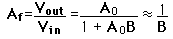
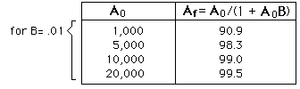

Stabilization of Voltage Gain
One of the benefits of negative feedback is the stabilization of the voltage gain of an amplifier against changes in the components (e.g., with temperature, frequency, etc. ). If you represent the gain without feedback (the open loop gain) by A0 , then the system gain with negative feedback is

where B is the fraction of the output which feeds back as a negative voltage at the input. The extent of this stabilizing influence can be illustrated as follows:
|  | This stabilization increases the effective bandwidth. |
|
Index
Electronics concepts
Op-amp concepts
Feedback concepts
|